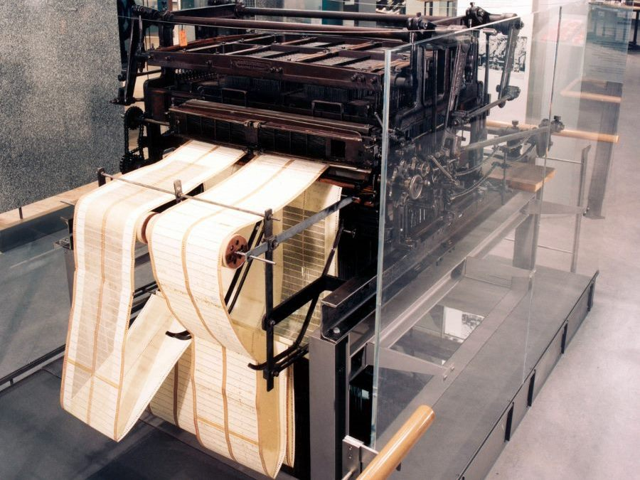

Tre secoli di storia
dei supporti per
l’archiviazione dati
Indietro
1725 - 1728
Telai automatici francesi
Siamo agli albori della Rivoluzione industriale e la tecnologia tessile francese, sviluppatasi nei secoli precedenti continuò a progredire nel corso del 1700. Un importante passo fu fatto da Basile Bouchon nel 1725, egli costruì un telaio semiautomatico per tessuti disegnati che era controllato da una striscia di carta dotata di fori (successivamente, con Falcon, verrà chiamata scheda perforata) che opportunamente collocati, permettevano agli uncini di agganciare solo alcuni fili dell’ordito, eseguendo il disegno sulla tela nel mentre che questa veniva tessuta. Dunque la striscia di carta perforata conteneva l’informazione del disegno da eseguire sul tessuto. Essa veniva caricata manualmente e poteva essere sostituita per cambiare il disegno. Falcon perfezionò la carta perforata, sostituendola con tante schede perforate una agganciata all’altra, in modo che quando una restava danneggiata era sufficiente sostituirla, senza duplicarla completamente come bisognava fare con quella di carta.
Telaio Bouchon, 1725
1804
Joseph-Marie Jacquard
Nel 1745 Jacques de Vaucanson vi introdusse vari miglioramenti ma senza alcun successo, fin quando Jacquard nel 1804 non lo perfezionò ulteriormente rendendolo completamente automatico.

Telaio Jacquard, 1804
1837
Charles Babbage
Il telaio Jacquard è spesso considerato un predecessore dell’informatica moderna perché le sue schede perforate intercambiabili hanno ispirato il design dei primi computer.
Quando il matematico britannico Charles Babbage pubblicò i suoi piani per il motore analitico, considerato il primo progetto di computer, la collega matematica Ada Lovelace disse: “Il motore analitico tesse motivi algebrici, proprio come il telaio Jacquard tesse fiori e foglie”.
Con il suo motore analitico, Babbage immaginava una macchina in grado di ricevere istruzioni da schede perforate per eseguire calcoli matematici. La sua idea era che le schede perforate avrebbero inserito i numeri e le istruzioni su cosa fare con quei numeri nella macchina. Ada Lovelace ha portato ulteriormente avanti l’idea di Babbage, proponendo che i numeri manipolati dal motore potessero rappresentare non solo quantità, ma qualsiasi dato. Vide il potenziale per i computer di essere utilizzato al di là del calcolo matematico e propose l’idea di quella che oggi conosciamo come programmazione informatica. Sfortunatamente, il motore analitico non fu mai completato, e passarono 100 anni prima che le previsioni di Babbage e Lovelace fossero realizzate.
Operatore mentre utilizza il telaio Jacquard
1889
Herman Hollerith
Nel 1889 conseguì una tesi di laurea sul tabulatore elettromeccanico, un selezionatore basato sulla codifica numerica delle informazioni, ottenuta rappresentando ciascun dato con un forellino posto in una specifica posizione di una scheda perforata.
Scheda perforata Hollerith, 1889
1928
Schede perforate applicate in ambito informatico
Quasi 30 anni dopo, le schede perforate di Hollerith divennero la scheda IBM, che per tanti anni fu usata per l’immissione dei dati nelle macchine contabili e successivamente negli elaboratori meccanici ed elettronici.
Operatrice mentre utilizza una perforatrice a pantografo, 1940
1950
Nastro magnetico
Nel giro di qualche anno il nastro cartaceo si trasformò in nastro magnetico. Si tratta di un lungo nastro di materiale plastico ricoperto di un ossido magnetico e capace di archiviare una grossa quantità di dati su una singola bobina. I primi vennero utilizzati dall’UNIVAC, un computer da 750 mila dollari.
Ha avuto il merito di velocizzare il processo di creazione, conservazione e lettura dei dati, rivoluzionando l’industria audiovisiva tra gli anni cinquanta e gli anni sessanta.
Ogni singolo nastro era in grado di contenere sino a 225 kilobyte, equivalente di 1.920 schede perforate.
Nastro magnetico utilizzato dall’UNIVAC, 1950
1956
Hard-disk
Nel 1956 fece la sua comparsa il primo disco rigido della storia. Era composto, esattamente come gli attuali, da dischi ricoperti da materiale magnetico, fatti girare a gran velocità. A differenza del nastro, i dati potevano essere letti e scritti in qualsiasi ordine e non necessariamente in ordine sequenziale.
Ideato dalla IBM, il primo prototipo era costituito da 50 dischi del diametro di 24 pollici (circa 60 cm) e conteneva sino a 5 megabyte di dati, equivalente a circa 23 nastri magnetici.
Era grande quanto un frigorifero, con un peso di oltre una tonnellata. La denominazione originaria era fixed disk (disco fisso), il termine hard disk (disco rigido) nacque intorno al 1970 per contrapposizione coi neonati floppy disk (dischetti).
Fixed disk IBM, 1956
1960
Core rope memory
Si tratta di una forma di memoria di sola lettura (ROM) per computer, utilizzata inizialmente negli anni sessanta dalle prime sonde spaziali della NASA Mars e poi nell’Apollo Guidance Computer (AGC) progettato e programmato dal Massachusetts Institute of Technology (MIT). Il software scritto dai programmatori del MIT è stato intessuto a mano nella memoria della corda centrale. Secondo gli standard dell’epoca, una grande quantità di dati poteva essere memorizzata in un così piccolo volume: 72 kilobyte per piede cubo o circa 2,5 megabyte per metro cubo. Questa era circa 18 volte la quantità di dati per volume rispetto alla memoria core di lettura/scrittura standard.
Operatrice mentre intreccia la corda della memoria, 1960
1970
Floppy-disk
La storia del floppy disk iniziò quando nel 1967 la IBM iniziò le prime sperimentazioni per la creazione di un nuovo dispositivo da utilizzare come memoria di massa per i suoi scopi. Nacque così il dischetto... o meglio, il primo era già comparso nel 1969 ma era solo leggibile. Nel 1971 sul floppy disk potevano essere memorizzati 80 KB. Con il trascorrere degli anni il dischetto cominciò a rimpicciolirsi e contemporaneamente a diventare più efficiente. Essi hanno continuato a svilupparsi fino agli anni ottanta, non solo come supporti standard di dati per sistemi operativi, programmi e dati, ma anche come strumenti di backup per il PC. Verso la fine degli anni ottanta, i floppy disk, che a quel punto avevano un formato da 3,5 pollici, raggiunsero la loro massima capacità di memoria, offrendo uno spazio di 1,5 MB.
Tre floppy-disk messi a confronto
1988
CD-ROM
Nato verso la fine degli anni ottanta, il CD-ROM (acronimo di Compact Disc – read only memory) è un’evoluzione dei CD utilizzati in precedenza per conservare dati di formato testuale e grafico. Il formato originale di conservazione dei dati venne ideato da Sony e Philips. Il cosiddetto Mode 1 permetteva di salvare dati informatici, il Mode 2 dati musicali o di tipo grafico.
Ogni CD conteneva sino a 700 megabyte, equivalente di 486 floppy disk.
CD inserito nello vassoio del computer
1995
DVD
Fisicamente identici ai CD-ROM, i DVD fecero la loro comparsa a metà degli anni novanta. Utilizzando materiali differenti per il salvataggio dei dati e differenti tecniche di lettura e scrittura dei dati, contengono molte più informazioni rispetto ad un singolo CD.
Con i suoi 4,7 gigabyte di capienza, equivale a circa
7 CD-ROM.
DVD
1994
Chiavetta USB e memoria Flash
Dispositivo di archiviazione di massa “plug-and-play” (letteralmente “attacca e utilizza”), dotato di memoria Flash e interfaccia Universal Serial Bus (USB).
Un gruppo di sette società iniziò lo sviluppo di USB nel 1994 con l’obiettivo di rendere più semplice il collegamento di dispositivi esterni ai PC sostituendo la moltitudine di connettori sul retro dei PC, affrontando i problemi di usabilità delle interfacce esistenti, oltre a consentire una maggiore velocità dati per dispositivi esterni e alla possibilità di scrivere e cancellare i dati a proprio piacimento. La prima chiave ad alta velocità giunta sul mercato è stata prodotta nel gennaio 2000 dalla Trek Technology di Singapore: il modello si chiamava ThumbDrive e offriva 8 megabyte di spazio.
Oggi le chiavette USB arrivano a contenere sino a 125 gigabyte di dati, equivalenti a circa 140 DVD.
Comune chiavetta USB
2000
Cloud storage
Dalla seconda metà degli anni novanta sono sorti sempre più servizi di Cloud storage, che offrono la possibilità all’utente di salvare i propri dati online e di accedervi da qualunque luogo dotato di una connessione al web. Tutto ciò di cui si ha bisogno è un dispositivo informatico e un collegamento Internet: accedendo al proprio account cloud si potranno consultare i file già presenti o crearne altri.
Secondo alcuni calcoli, nel cloud risiederebbero sino a 1 exabyte di dati (1 trilione di byte, equivalente ad un 1 milione di terabyte), più o meno l'equivalente di 500 mila hard disk da 2 terabyte; 8 milioni 192 mila cihavette USB da 125 gigabyte; 218 milioni circa di DVD e 9 milioni di miliardi di schede perforate.
Interno del Data Center CERN
Sitografia /
Bibliografia
All'inizio fu la scheda perforata Nel magazine Swisscom
Storia dell'archiviazione dati, dalla scheda perforata al Cloud Storage
Jacquard, Joseph-Marie Nell'enciclopedia Treccani
Software Woven Into Wire: Core Rope and the Apollo Guidance Computer
Storia del Floppy Disk Nell'enciclopedia online Wikipedia
Guarnieri M., Da Habilis a Jobs: due milioni di anni con la tecnologia, Esculapio Editrice, Bologna, 2019.
Informazioni
Atlante tecnologico
Archiviazione dati
Luca Seguenza
SUPSI
Corso di interaction design, A.A. 2019-2020
Docenti: Andreas Gysin, Giovanni Profeta